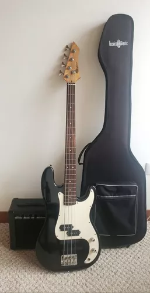
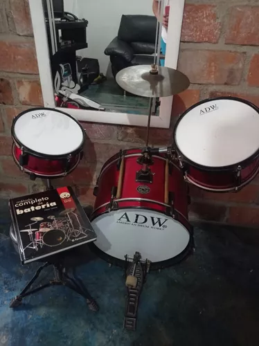
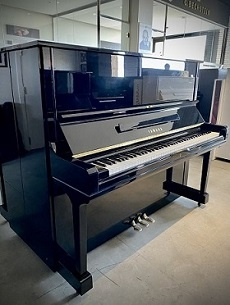
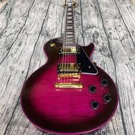

Nombre:Bajo
Precio:$400000
Cantidad
El bajo es un instrumento musical de cuerda, de la familia de los instrumentos de viento-madera, que se toca principalmente pulsando las cuerdas con los dedos o con una púa. Es un componente esencial en la mayoría de las bandas y conjuntos musicales, proporcionando una base rítmica y armónica sólida. Su sonido grave y profundo complementa y da cuerpo a la música, creando una sólida estructura rítmica y melódica. Es utilizado en una amplia variedad de géneros musicales, desde el jazz y el funk hasta el rock y el pop.
Nombre:Bateria
Precio:$235000
Cantidad
batería es un conjunto de instrumentos de percusión que incluye tambores, platillos y otros elementos, diseñados para ser tocados por un único músico. Proporciona el ritmo y la base rítmica en una variedad de géneros musicales, desde el rock hasta el jazz.
Nombre:Piano
Precio:$200000
Cantidad
El piano es un instrumento musical de teclado que produce sonidos mediante el golpe de martillos cubiertos de fieltro sobre cuerdas tensas. Es uno de los instrumentos más versátiles y populares, capaz de expresar una amplia gama de emociones y estilos musicales. Su rango dinámico, desde suaves pianísimos hasta potentes fortísimos, lo convierte en el centro de atención en muchas composiciones musicales.
Nombre:Saxofon
Precio:$150000
Cantidad
El saxofón es un instrumento de viento-madera con una boquilla de caña y un cuerpo cónico de metal, que produce un sonido rico y expresivo. Es conocido por su versatilidad en una variedad de géneros musicales, desde el jazz y el blues hasta la música clásica y el pop. Su capacidad para transmitir emociones y su flexibilidad tonal lo convierten en un instrumento destacado en la música contemporánea.
Nombre:Violin
Precio:$200000

Cantidad
El violín es un instrumento de cuerda frotada que se toca con un arco. Es conocido por su sonido brillante y expresivo, capaz de transmitir una amplia gama de emociones. Desde conciertos clásicos hasta música folclórica y moderna, el violín es un componente fundamental en muchos estilos musicales. Con su elegancia y versatilidad, el violín ha cautivado a oyentes y músicos durante siglos.
Nombre:Guitarra electrica
Precio:$305000
Cantidad
La guitarra eléctrica es un instrumento de cuerda amplificado que produce sonidos mediante la vibración de las cuerdas magnéticamente captadas por pastillas electrónicas. Es emblemática en géneros como el rock, el blues y el jazz fusion, ofreciendo un sonido versátil y potente. Con su capacidad para crear una amplia variedad de tonos y efectos, la guitarra eléctrica es un elemento fundamental en la música contemporánea, desde melodías cautivadoras hasta solos vibrantes.